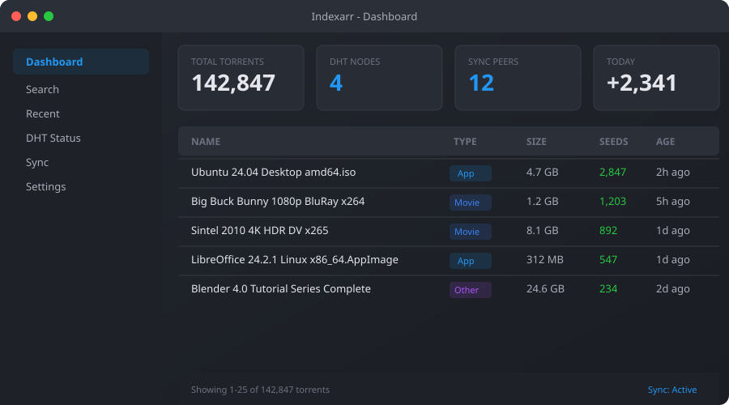

Indexarr
A Community-Powered Torrent Index
Users upload torrents. Nodes sync with each other. Everyone gets the full index. Indexarr is a decentralized torrent indexer where every contributor grows the catalog for the entire network — no central authority, no accounts, no tracking. Fully compatible with the *arr ecosystem.
